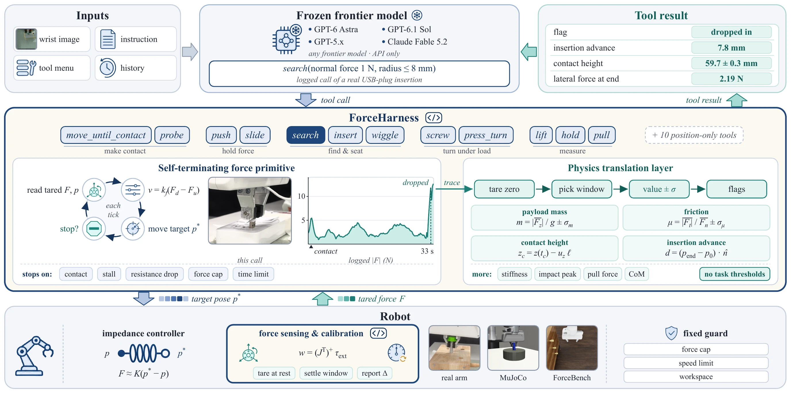
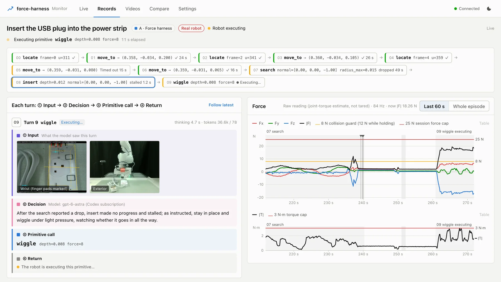

ForceHarness
Turning force into action and physics for frozen frontier models
Show Lab, National University of Singapore †Corresponding author
- PaperarXiv soon
- Code
- Datasetsoon
- Robot videos
Six tasks on a real arm
A Franka FR3 with joint torque sensors but no wrist force sensor, run zero-shot by GPT-6 Astra. Each clip is one whole autonomous episode, sped up as marked; switch a tile to see the no-force control, which keeps the same harness and safety limits but removes force tools, force values and force guidance.
Successes out of 10 episodes per condition; for GPT-6 Astra every task differs at p < 0.01 (Fisher's exact test).
| Task | No force GPT-6 Astra | ForceHarness GPT-6 Astra | ForceHarness GPT-6.1 Sol |
|---|---|---|---|
| Total | 2/60 | 54/60 | 47/60 |
Simulation
The same harness on the public ForceBench suite in Isaac Lab and on HiddenPhys, our MuJoCo benchmark, where classical, learned and zero-shot methods run on identical episodes.
ForceBench Isaac Lab, 8 tasks, RGB images only, 10 episodes per task
| Method | Weight | CoM | Faucet | Faucet dir. | Stove | Stove press | Drawer | Nut | Mean |
|---|---|---|---|---|---|---|---|---|---|
| π0.5 + Prompt Fusion, trained* | 88.0 | 56.5 | 21.0 | 41.5 | 16.0 | 2.5 | 23.0 | 34.0 | 35.3 |
| GPT-6 Astra, no force | 80 | 50 | 100 | 50 | 100 | 80 | 0 | 100 | 70.0 |
| GPT-6 Astra + ForceHarness | 100 | 70 | 100 | 50 | 100 | 90 | 100 | 90 | 87.5 |
| GPT-6.1 Sol, no force | 90 | 50 | 90 | 30 | 100 | 60 | 0 | 100 | 65.0 |
| GPT-6.1 Sol + ForceHarness | 100 | 60 | 100 | 40 | 100 | 100 | 100 | 100 | 87.5 |
* Best trained row reported in the ForceBench paper, not reproduced by us; 200 demonstrations per task. Success in percent.
HiddenPhys MuJoCo, 7 tasks with a hidden physical variable, 20 test seeds per task
| Method | Weight | CoM | Wipe | Stack | Peg | Latch | Lock | Total | Damaged | Demos |
|---|---|---|---|---|---|---|---|---|---|---|
| Expert force controller† | 20 | 19 | 20 | 20 | 18 | 19 | 20 | 136 | 1 | 0 |
| Position only† | 10 | 10 | 0 | 17 | 5 | 13 | 16 | 71 | 6 | 0 |
| Diffusion Policy | 16 | 17 | 4 | 11 | 15 | 9 | 11 | 83 | 20 | 200 |
| π0.5 | 9 | 9 | 14 | 12 | 12 | 2 | 11 | 69 | 24 | 200 |
| ForceVLA | 11 | 10 | 12 | 12 | 15 | 2 | 8 | 70 | 29 | 200 |
| GPT-6 Astra, no force | 17 | 10 | 16 | 20 | 1 | 13 | 10 | 87 | 17 | 0 |
| GPT-6 Astra + ForceHarness | 20 | 20 | 20 | 20 | 15 | 20 | 20 | 135 | 0 | 0 |
† Hand-written state machine per task. Damaged counts episodes past a handle's damage threshold. Trained policies with force input and Claude Fable 5.2 are in the paper.
Abstract
Frontier multimodal models can now control robots zero-shot from images, yet many manipulation tasks depend on contact forces that images cannot show. Bringing force to an API-only frozen model raises two challenges. First, contact evolves much faster than an API model can decide, so the system must close the loop on force beneath the model. Second, a frozen model cannot interpret raw force streams, so force must be returned in a form the model can reason about.
Therefore, we present ForceHarness, a harness that lets frozen models use force without demonstrations or finetuning. After calibrating hand force from a wrist sensor or joint torques alone, ForceHarness addresses the first challenge with self-terminating force primitives that regulate force on their own and return at a contact event. To address the second challenge, a physics translation layer turns each force trace into physical quantities with uncertainty as the tool result. To evaluate ForceHarness against expert force controllers and learned policies under identical conditions, we also build HiddenPhys, a seven-task MuJoCo benchmark with hidden physical variables. On a real arm without a wrist force sensor, ForceHarness raises the zero-shot success rate of GPT-6 Astra from 3.3% to 90.0%. In simulation, it adds 17.5 percentage points on the public ForceBench suite and 34.3 percentage points on HiddenPhys, surpassing force-aware policies trained on demonstrations on both benchmarks and matching hand-written expert controllers on HiddenPhys. Ablations further show that smaller models make significantly better decisions when given physical quantities rather than raw force values.
Real robot
6 tasks, 10 trials each, GPT-6 Astra
ForceBench
8 tasks in Isaac Lab, RGB only, GPT-6 Astra
HiddenPhys
7 tasks in MuJoCo, 20 seeds each, GPT-6 Astra
How it works

Physics translation
Fixed estimators turn each primitive's force trace into physical quantities: mass, centre-of-mass offset, friction, contact height, stiffness, insertion advance. Each comes with an uncertainty, a window and flags, and none with a task threshold: the layer says how heavy a load is, never whether that is enough.
Self-terminating force primitives
Twelve contact skills share one loop. A target pose leads the measured pose, so the robot's stock impedance controller turns the lead into force; an admittance law holds a commanded force; the primitive stops on contact, stall, a drop in resistance or its own goal, and holds still while the model thinks.
Force sensing and calibration
A wrist sensor gives hand force directly; on an arm without one, the layer solves w = (JT)+ τext from joint torques. Three run-time rules handle slow bias: tare at rest, settle then read, report changes rather than absolute values.
Watch an episode
A web monitor runs alongside every real-robot episode. It shows the wrist force live, next to what the model saw, the tool it called, and the tool result that came back, and keeps each episode for review and comparison.


Get started
Hand it to your coding agent
Paste this into the coding agent you use. The repository ships a setup skill, plain Markdown that any agent can follow: it installs and verifies the simulators, and on a real arm it first checks whether the arm can sense force at all, then calibrates force and brings the robot up in stages that never move it without your confirmation.
Set up ForceHarness for me: clone https://github.com/showlab/ForceHarness, read its AGENTS.md, and follow the setup skill in skills/forceharness-setup/SKILL.md gate by gate. My target: the HiddenPhys simulator (or: ForceBench, or: my robot arm, <make, model, controller software>). Report each gate to me, never move the robot without my go-ahead, and ask before any paid API call.Run it in simulation
Install the harness and the HiddenPhys benchmark, check the simulator, then run one episode with a model.
git clone https://github.com/showlab/ForceHarness
cd ForceHarness && pip install -e ".[sim]"
python scripts/check_sim.py
python scripts/run_episode.py --task weight_sort \
--model gpt-6-astra --paper-defaults --seed 9100Use the demonstrations
1,423 expert episodes on the seven HiddenPhys tasks, with two cameras, proprioception, raw wrist force and the exact controller actions: raw episodes that replay exactly, and a LeRobot dataset for training.
Citation
@article{sun2026forceharness,
title = {ForceHarness: Turning Force into Action and Physics
for Frozen Frontier Models},
author = {Sun, Ke and Ma, Kevin Yuchen and Zhang, Yike and Chen, Yanzhe
and Shou, Mike Zheng},
journal = {arXiv preprint},
year = {2026}
}